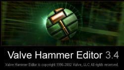

What is the V.alve D.eveloper F.ormat (VDF)?
The VDF format comprises of Many coding languages based off of C# developed by valve for use in the Goldsource and Source engines.
These languages are used to do things such as Compile a map project in hammer, Create custom sequences for models and compile them,
and even downloading and modifying the Half-Life source code to add Custom NPC's with AI, Customize the AI, and make your own entities in the hammer editor!
Select an image below to learn more about that area of Gold-source development
